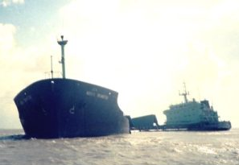

O que aconteceu
Em novembro de 1998, o navio graneleiro Norsul Trombetas aproximava-se da reta final de sua viagem rumo ao terminal privado da Alumar (consórcio produtor de alumínio em São Luís), transportando 24 mil toneladas de bauxita.
Quando estava prestes a ingressar no canal de acesso ao terminal — a menos de três milhas náuticas do Porto do Itaqui e faltando poucos quilômetros para a atracação —, a embarcação saiu da rota segura e encalhou no banco de areia conhecido pelos navegadores locais como Banco dos Lanzudos.
Preso no banco arenoso sob ação constante das marés da Baía de São Marcos, o navio não conseguiu reflutuar e acabou condenado à perda total.
Tentativas de Resgate e Remoção
- Falhas nas operações de desencalhe: Diversas tentativas de reflutuação e resgate foram realizadas após o acidente, mas o peso da carga de bauxita somado ao assoreamento rápido causado pelas correntes de maré impediu a retirada do navio inteiro.
- Desmonte parcial tardio: Somente cerca de 12 anos após o encalhe (por volta de 2010), equipes especializadas conseguiram cortar e remover partes da estrutura metálica do casco.
- Destroços remanescentes: Mesmo após as operações de corte, vestígios submersos e parcialmente expostos na maré baixa permaneceram no Banco dos Lanzudos.
Riscos à Navegação e Curiosidades Locais
Os destroços enferrujados do Norsul Trombetas tornaram-se um ponto conhecido por pescadores, praticantes de esportes náuticos e expedições de caiaque na região próxima à Ilha de Tauá-Mirim.